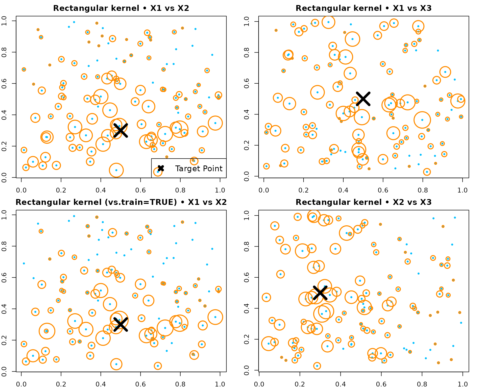
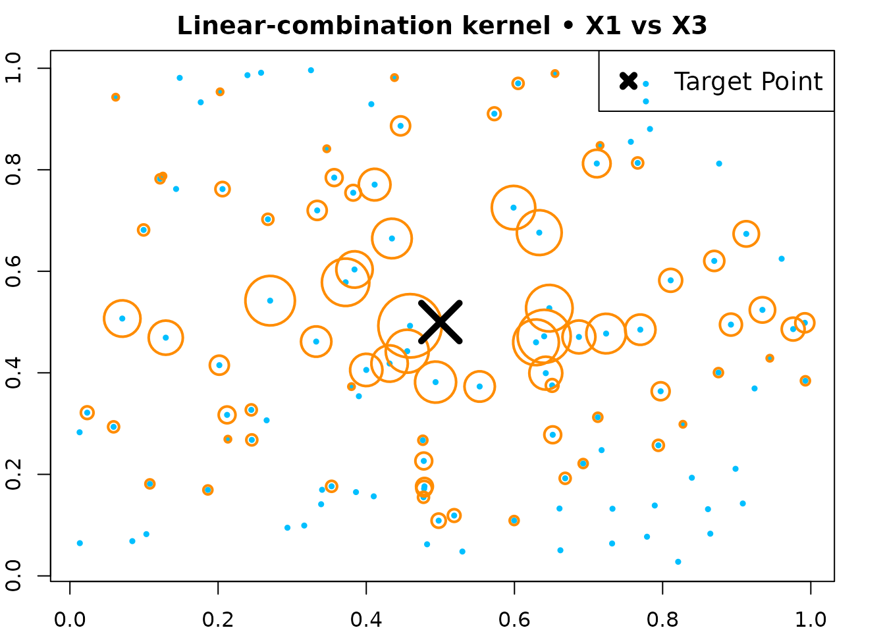

Random Forest Kernel - Tutorial (RLT)
Ruoqing Zhu
Last Updated: July 02, 2026
Source:vignettes/articles/feature-kernel.Rmd
feature-kernel.RmdOverview
This page shows how to compute and visualize the random forest kernel
induced by an RLT forest via forest.kernel().
Example 1 - Axis-aligned
We build a regression forest using “best” splits and compute kernel weights.
# ---- Generate a small dataset (about 100 obs) ----
set.seed(1)
n <- 120; p <- 5
X <- matrix(runif(n * p), n, p)
y <- X[, 1] + X[, 2] + rnorm(n)
# Train the forest (axis-aligned "best" splits)
library(RLT)
fit_rect <- RLT(
X, y, model = "regression",
ntrees = 300, mtry = p, nmin = 5,
split.gen = "best",
resample.prob = 0.8, resample.replace = TRUE,
importance = TRUE,
param.control = list("resample.track" = TRUE),
ncores = 1,
verbose = FALSE
)
# Choose a target point
newX <- matrix(c(0.5, 0.3, 0.5, 0.5, 0.5), 1, p)
# Forest kernel weights between newX and all X
KW_rect <- forest.kernel(fit_rect, X1 = newX, X2 = X)$Kernel
# A simple size mapping for visualization (normalized)
size_scale <- 10 * sqrt(KW_rect / sqrt(sum(KW_rect^2)))
op <- par(mfrow = c(2, 2), mar = c(2, 2, 2, 2))
# X1 vs X2 (both are signal features)
plot(X[, 1], X[, 2], col = "deepskyblue", pch = 19, cex = 0.5,
main = "Rectangular kernel - X1 vs X2")
points(X[, 1], X[, 2], col = "darkorange", cex = size_scale, lwd = 2)
points(newX[1], newX[2], col = "black", pch = 4, cex = 4, lwd = 5)
legend("bottomright", "Target Point", pch = 4, col = "black", lwd = 5, lty = NA, cex = 1.2)
# X1 vs X3 (X3 is noise)
plot(X[, 1], X[, 3], col = "deepskyblue", pch = 19, cex = 0.5,
main = "Rectangular kernel - X1 vs X3")
points(X[, 1], X[, 3], col = "darkorange", cex = size_scale, lwd = 2)
points(newX[1], newX[3], col = "black", pch = 4, cex = 4, lwd = 5)
# Optionally, compute kernel inside the original training forest (vs.train = TRUE)
KW_rect_train <- forest.kernel(fit_rect, X1 = newX, X2 = X, vs.train = TRUE)$Kernel
size_scale_train <- 10 * sqrt(KW_rect_train / sqrt(sum(KW_rect_train^2)))
plot(X[, 1], X[, 2], col = "deepskyblue", pch = 19, cex = 0.5,
main = "Rectangular kernel (vs.train=TRUE) - X1 vs X2")
points(X[, 1], X[, 2], col = "darkorange", cex = size_scale_train, lwd = 2)
points(newX[1], newX[2], col = "black", pch = 4, cex = 4, lwd = 5)
# Another projection
plot(X[, 2], X[, 3], col = "deepskyblue", pch = 19, cex = 0.5,
main = "Rectangular kernel - X2 vs X3")
points(X[, 2], X[, 3], col = "darkorange", cex = size_scale, lwd = 2)
points(newX[2], newX[3], col = "black", pch = 4, cex = 4, lwd = 5)
par(op)Example 2 - Linear-combination
We build a regression forest using random linear-combination splits and compute kernel weights.
set.seed(1)
n <- 120; p <- 5
X <- matrix(runif(n * p), n, p)
y <- X[, 1] + X[, 3] + 0.3 * rnorm(n)
fit_lc <- RLT(
X, y, model = "regression",
ntrees = 300, mtry = p, nmin = 5,
split.gen = "random", nsplit = 3,
resample.prob = 0.9, resample.replace = FALSE,
importance = TRUE,
ncores = 1,
verbose = FALSE
)
newX <- matrix(c(0.5, 0.3, 0.5, 0.5, 0.5), 1, p)
KW_lc <- forest.kernel(fit_lc, X1 = newX, X2 = X)$Kernel
size_scale_lc <- 10 * sqrt(KW_lc / sqrt(sum(KW_lc^2)))
par(mar = c(2, 2, 2, 2))
plot(X[, 1], X[, 3], col = "deepskyblue", pch = 19, cex = 0.5,
main = "Linear-combination kernel - X1 vs X3")
points(X[, 1], X[, 3], col = "darkorange", cex = size_scale_lc, lwd = 2)
points(newX[1], newX[3], col = "black", pch = 4, cex = 4, lwd = 5)
legend("topright", "Target Point", pch = 4, col = "black", lwd = 5, lty = NA, cex = 1.2)
Example 3 - Linear-combination (SIR, no embedded model)
Fit a model using linear-combination splits without an embedded forest; variables are ranked by marginal screening.
library(MASS)
n <- 300
p <- 5
S <- matrix(0.3, p, p)
diag(S) <- 1
S[1, 5] <- S[5, 1] <- 0.9
S[1, 3] <- S[3, 1] <- S[5, 3] <- S[3, 5] <- -0.3
X <- mvrnorm(n, mu = rep(0, p), Sigma = S)
y <- 1 + X[, 1] + X[, 3] + 0.5 * X[, 5]^2 + rnorm(n)
w <- runif(n)
RLTfit <- RLT(
X, y, model = "regression", obs.w = w,
ntrees = 100, ncores = 1, nmin = 20, mtry = 3,
split.gen = "random", nsplit = 3,
resample.prob = 0.8, resample.replace = FALSE,
linear.comb = 3,
linear.comb.method = "sir",
importance = TRUE,
verbose = FALSE
)
plot(RLTfit$Prediction, y)
mean((RLTfit$Prediction - y)^2, na.rm = TRUE)
## [1] 1.283215